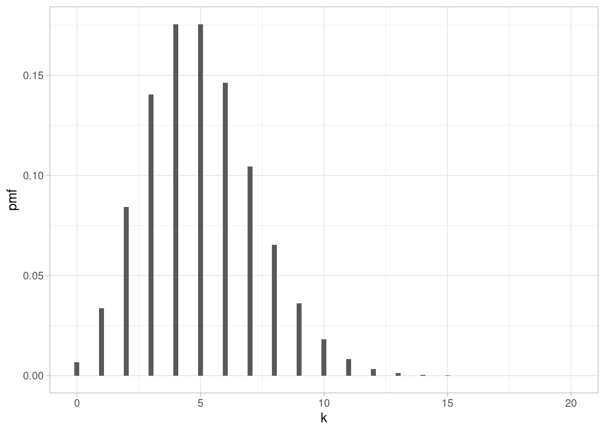
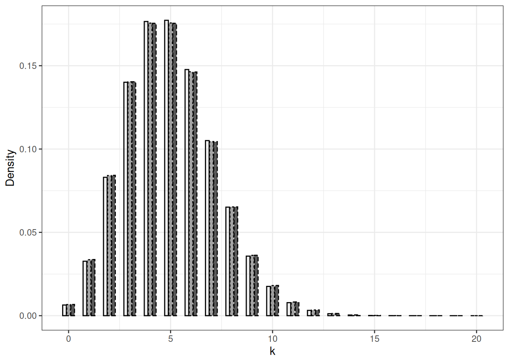
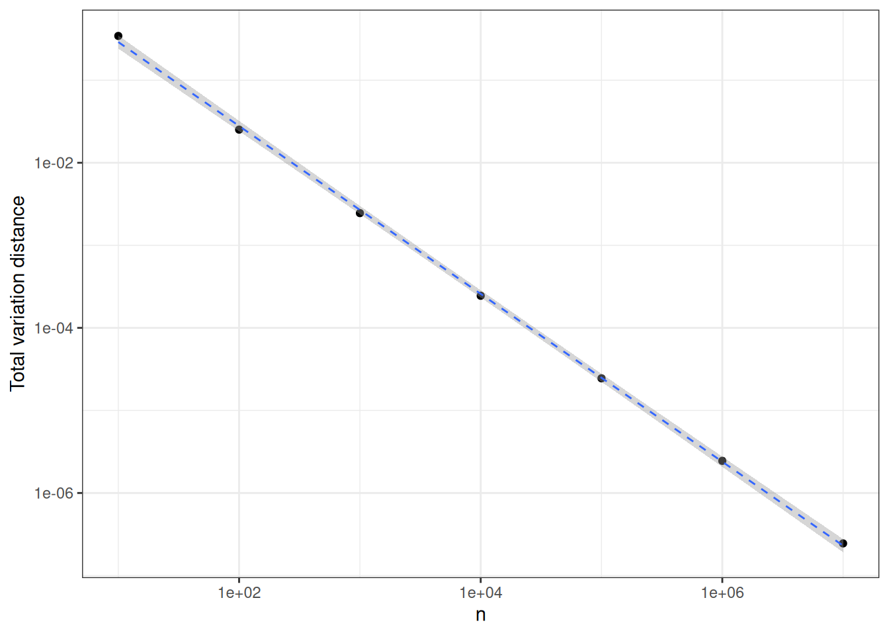

| index | 1 | 2 | 3 | 4 | 5 | 6 | 7 | 8 | 9 | 10 |
|---|---|---|---|---|---|---|---|---|---|---|
| position | 2 | 3 | 1 | 2 | 4 | 4 | 2 | 3 | 2 | 5 |
1 Introduction
Dans ce chapitre, nous passons en revue les définitions de base de la théorie des probabilités en partant d’un simple problème de modélisation issu de l’informatique. Les notions seront définies formellement dans les chapitres suivants. Ce contexte simple nous permet d’effectuer des calculs et d’esquisser le type de résultats que nous rechercherons au cours du semestre : moments, majorations de queue, loi des grands nombres, théorèmes centraux limites, et éventuellement d’autres formes de convergence faible.
1.1 Hachage
Le hachage est une technique de calcul utilisée dans presque tous les domaines de l’informatique, des bases de données aux compilateurs en passant par les entrepôts de données (big data). Tout ouvrage sur les algorithmes contient une discussion sur le hachage ; voir par exemple Introduction to Hashing by Jeff Erickson.
Dans des conditions idéalisées, hacher \(n\) éléments vers \(m\) valeurs consiste à appliquer une fonction choisie uniformément au hasard parmi les \(m^n\) fonctions de \(1, \ldots, n\) vers \(1, \ldots, m\). Les performances d’une méthode de hachage (combien de cases faut-il examiner lors d’une recherche ?) dépendent des propriétés typiques d’une telle fonction aléatoire.
Il est commode de penser aux valeurs dans \(1, \ldots, m\) comme des urnes numérotées et aux éléments comme \(n\) boules numérotées. Choisir une fonction aléatoire revient à lancer indépendamment les \(n\) boules dans les \(m\) urnes. La probabilité qu’une boule donnée tombe dans une urne donnée est \(1/m\).
Les questions portant sur les fonctions aléatoires peuvent être reformulées.
- Combien d’urnes vides en moyenne ?
- Quelle est la loi du nombre d’urnes vides ?
- Combien d’urnes contiennent \(r\) boules ?
- Quel est le nombre maximal de boules dans une seule urne ?
Consultez http://stephane-v-boucheron.fr/post/2019-09-02-idealizedhashing/ et téléchargez le notebook qui s’y trouve.
Ce modèle jouet mais utile est l’occasion de rappeler les notions de base de la théorie des probabilités.
Dans la suite, nous appelons ce cadre l’expérience des allocations aléatoires.
Dans Table 1.1, la ligne \(\omega\) représente le résultat d’une allocation aléatoire avec \(n= 10\), \(m= 5\) : \(\omega_4= 2\), \(\omega_5= 4\), …
1.2 Un espace probabilisé
L’ensemble des issues est appelé l’univers. Dans le cadre des allocations aléatoires, c’est l’ensemble des suites de longueur \(n\) à valeurs dans \(1, \ldots, m\). C’est aussi une fonction de \(\{1, \ldots, n\}\) vers \(\{1, \ldots, m\}\). Nous notons une issue générique par \(\omega\). Le \(i^{\text{e}}\) élément de \(\omega\) est noté \(\omega_i\). Cet univers est noté \(\Omega\) ; ici il est fini, de cardinal \(m^n\).
Dans ce cadre simple, la loi uniforme sur l’univers attribue à chaque sous-ensemble \(A\) de \(\Omega\) la probabilité \(|A|/|\Omega|\). Lorsque l’univers est fini ou dénombrable, tous les sous-ensembles de l’univers sont des événements ; attribuer une probabilité à tout sous-ensemble de l’univers ne pose pas de difficulté.
Rappelons qu’une loi de probabilité \(P\) associe à une collection \(\mathcal{F}\) de sous-ensembles de l’univers (\(\mathcal{F} \subseteq 2^\Omega\)) des valeurs dans \([0,1]\) et satisfait :
- \(P(\emptyset)=0\)
- \(P(\Omega)=1\)
- pour toute collection dénombrable d’événements deux à deux disjoints \(A_1, A_2, \ldots, n, \ldots\), \(P(\cup_{n=1}^\infty A_n) = \sum_{n=1}^\infty P(A_n)\)
Voir Section 2.3.
Il en découle que \(P(A_1 \cup A_2 \cup \ldots \cup A_k) = \sum_{i=1}^k P(A_i)\) pour toute collection finie de sous-ensembles deux à deux disjoints \(A_1, \ldots, A_k\).
Pour que le domaine de \(P\) soit bien défini, la collection de sous-ensembles \(\mathcal{F}\) doit être stable par unions dénombrables, intersections dénombrables et passage au complémentaire, et contenir l’ensemble vide \(\emptyset\) et l’univers \(\Omega\). En d’autres termes, elle doit être une \(\sigma\)-algèbre, voir Section 2.2.
Notez que d’autres lois de probabilité ont du sens sur cet univers simple. Voir par exemple le scénario des allocations équilibrées.
Dans le scénario des allocations équilibrées, les fonctions aléatoires de \(1, \ldots, n\) vers \(1, \ldots, m\) sont construites séquentiellement. Nous construisons d’abord \(\omega_1\) en tirant un nombre uniformément au hasard dans \(1, \ldots, n\). Supposons maintenant que nous ayons construit \(\omega_1, \ldots, \omega_i\) pour un certain \(i<n\). Pour déterminer \(\omega_{i+1}\), nous tirons uniformément au hasard deux nombres dans \(1, \ldots, n\), disons \(j\) et \(k\). Nous calculons
\[ c_j = \Big|\{ \ell : 1\leq \ell \leq i, \omega_\ell = j\}\Big| \qquad\text{et} \qquad c_k = \Big|\{ \ell : 1\leq \ell \leq i, \omega_\ell = k\}\Big| \, . \]
Si \(c_j < c_k\), \(\omega_{i+1}= j\), sinon \(\omega_{i+1}= k\).
Cette construction itérative définit une loi de probabilité (unique) sur \(\{1, \ldots, m\}^n\) qui diffère de la loi uniforme. Il n’est pas trivial de montrer qu’elle réalise une garantie d’équilibrage non triviale pour la taille des préimages induites par \(\omega\).
1.3 Variables aléatoires et indépendance
Considérons les fonctions à valeurs réelles de \(\Omega\) vers \(\mathbb{R}\) définies par :
\[X_{i, j}(\omega) = \begin{cases} 1 & \text{if } \omega_i = j \\ 0 & \text{otherwise} \, . \end{cases} \]
Cette fonction est un cas particulier de variable aléatoire, voir Section 2.5.
Dans l’exemple jouet décrit dans Tableau 1.1, nous avons \(X_{4,1}(\omega)=1, X_{5,1}(\omega)=0, ...\).
Notez que la définition de la variable aléatoire n’a rien à voir avec la loi de probabilité que nous avons considérée jusqu’ici. Il n’y a rien d’aléatoire dans une variable aléatoire. De plus, une variable aléatoire n’est pas une variable, c’est une fonction. Vous pouvez questionner cette terminologie, mais elle est consacrée par la tradition.
Dans l’espace probabilisé \((\Omega, 2^\Omega, \Pr)\), la loi de la variable aléatoire \(X_{i,j}\) est une loi de Bernoulli de paramètre \(1/m\).
\[ \Pr \Big\{ X_{i,j} = 1\Big\} = \frac{1}{m} \qquad \Pr \Big\{ X_{i,j} = 0\Big\} = 1 - \frac{1}{m} \, , \]
voir Section 5.1 pour plus de détails sur les lois de Bernoulli. Cela vient de
\[ \Pr \Big\{\omega : X_{i,j}(\omega) = 1\Big\} = \frac{\Big|\{ \omega : X_{i,j}(\omega) = 1 \}\Big|}{m^n} = \frac{m^{n-1}}{m^n} = \frac{1}{m} \, . \]
Rappelons que \(\Pr \Big\{ X_{i,j} = 1\Big\}\) est une abréviation pour \(\Pr \Big\{\omega : X_{i,j}(\omega) = 1\Big\}\).
Pour un moment, nous fixons un \(j \in \{1, \ldots, m\}\) et considérons la collection de variables aléatoires \((X_{i, j})_{i \leq n}\).
Pour chaque \(i\), nous pouvons définir des événements (sous-ensembles de \(\Omega\)) à partir de la valeur de \(X_{i,j}\) :
\[\begin{align*} & \Big\{ \omega : X_{i,j}(\omega) = 1\Big\} \\ & \Big\{ \omega : X_{i,j}(\omega) = 0\Big\} \end{align*}\]
et, avec \(\Omega\) et \(\emptyset\), ils forment la collection \(\sigma(X_{i,j})\) d’événements définissables à partir de \(X_{i,j}\).
Rappelons la définition d’événements indépendants, ou plutôt la définition d’une collection d’événements indépendants.
Une collection d’événements \(E_1, E_2, \ldots, E_k\) de \((\Omega, 2^{\Omega})\) est indépendante au sens de \(\Pr\) si, pour tout \(I \subseteq \{1, \ldots, n\}\),
\[ \Pr \Big\{\cap_{i \in I} E_i \Big\} = \prod_{i \in I} \Pr \{ E_i \} \]
On peut vérifier que, pour chaque \(j\) fixé, \((X_{i, j})_{i \leq n}\) est une collection de variables aléatoires indépendantes sous \(\Pr\). Par cela, nous entendons que toute collection \(E_1, E_2, \ldots, E_n\) d’événements où \(E_i \in \sigma(X_{i,j})\) pour chaque \(i \in \{1, \ldots, n\}\) est une collection d’événements indépendants sous \(\Pr\).
La notion d’indépendance est une pierre angulaire de la théorie des probabilités, voir le chapitre Chapitre 8.
Concrètement, cela signifie que pour toute suite \(b_1, \ldots, b_n \in \{0,1\}^n\) (une issue possible de la suite de variables aléatoires \(X_{1,j}, X_{2,j}, \ldots, X_{n,j}\)), nous avons
\[\begin{align*} \Pr \Big\{ \bigwedge_{i=1}^n X_{i,j}(\omega) = b_i \Big\} & = \prod_{i=1}^n \Pr \Big\{ X_{i,j}(\omega) = b_i \Big\} \\ & = \prod_{i=1}^n \left(\frac{1}{m}\right)^{b_i} \left(1-\frac{1}{m}\right)^{1-b_i} \\ & = \left(\frac{1}{m}\right)^{\sum_{i=1}^n b_i} \left(1-\frac{1}{m}\right)^{n- \sum_{i=1}^n b_i} \, . \end{align*}\]
Observez que l’issue de la suite \(X_{i,j}\) pour \(i \in 1,\ldots,n\) vaut \(b_1, \ldots, b_n\) seulement si \(\sum_{i=1}^n b_i= Y_j\). Cela simplifie grandement les calculs.
Nous nous intéressons au nombre d’éléments de \(1, \ldots, n\) qui sont envoyés (alloués) vers \(j\) par la fonction aléatoire \(\omega\). Définissons
\[ Y_j(\omega) = \sum_{i=1}^n X_{i, j}(\omega) \, . \]
Dans l’exemple jouet décrit dans Tableau 1.1, \(Y_3(\omega) = 4\) tandis que \(Y_5(\omega)=1\) et \(Y_4(\omega)=0\) :
| Occupancy score | 1 | 2 | 3 | 4 | 5 |
|---|---|---|---|---|---|
| Number of bins | 1 | 4 | 2 | 2 | 1 |
Occupancy scores
Dans l’espace probabilisé \((\Omega, 2^\Omega, \Pr)\), la variable aléatoire \(Y_j\) suit une loi binomiale, comme somme de variables aléatoires de Bernoulli indépendantes et de même loi, voir Section 5.1.
\[ \Pr \Big\{ Y_j = r \Big\} = \binom{n}{r} p^r (1-p)^{n-r} \qquad \text{with} \quad p =\frac{1}{m} \]
pour \(r \in 0, \ldots, n\).
En effet, rappelons
\[\begin{align*} \Pr \Big\{ Y_j = r \Big\} & = \sum_{\omega : Y_j(\omega) = r} \Pr\Big\{\omega\Big\} \\ & = \sum_{\omega : Y_j(\omega) = r} \left(\frac{1}{m}\right)^{r} \left(1-\frac{1}{m}\right)^{n- r} \\ & = \left| \Big\{ \omega : \omega \in \Omega, Y_j(\omega) = r \Big\} \right| \times \left(\frac{1}{m}\right)^{r} \left(1-\frac{1}{m}\right)^{n- r} \\ & = \binom{n}{r} \left(\frac{1}{m}\right)^{r} \left(1-\frac{1}{m}\right)^{n- r} \, . \end{align*}\]
Pour \(n\) et \(m\) grands, cette loi binomiale tend à se concentrer autour de sa valeur moyenne ou espérance
\[ \mathbb{E} Y_j = \sum_{r=0}^n r \times \Pr \Big\{ Y_j = r \Big\} = \frac{n}{m} \, . \]
Voir Chapitre 3 pour une approche systématique de l’espérance, de la variance et des moments d’ordre supérieur, fondée sur la théorie de l’intégration.
Le dernier chapitre ?sec-chapConcentration est consacré au développement de majorations de queue pour des variables aléatoires comme \(Y_j\) qui sont des fonctions lisses de variables aléatoires indépendantes.
Pour l’instant, rappelons que sur un espace probabilisé dénombrable, l’espérance d’une variable aléatoire \(Z\) peut être définie par
\[ \mathbb{E} Z = \sum_{\omega \in \Omega} \Pr\{\omega\} \times Z(\omega) \]
pourvu que la série soit absolument convergente.
Cela est illustré par Figure 1.1. En principe, une variable aléatoire binomiale de paramètres \(n=5000\) et \(p=.001\) peut prendre toute valeur entre \(0\) et \(5000\). Cependant, la plus grande partie (plus de \(95\,\%\)) de la masse de probabilité est supportée par \(\{1, \ldots, 10\}\).

1.4 Convergences
Si nous faisons tendre \(n\) et \(m\) vers l’infini tandis que \(n/m\) tend vers \(c>0\), nous observons que, pour chaque \(r\geq 0\) fixé, la suite \(\Pr \Big\{ Y_j = r \Big\} = \binom{n}{r} (1/m)^r (1-1/m)^{n-r}\) tend vers \[
\mathrm{e}^{-c} \frac{c^r}{r !}
\]
qui est la probabilité qu’une variable aléatoire de Poisson d’espérance \(c\) prenne la valeur \(r\) (voir Section 5.2 pour plus de détails sur les lois de Poisson).
C’est un cas de la loi des événements rares, un cas particulier de convergence en loi, voir Chapitre 15.
La possibilité d’approcher une loi de Poisson à l’aide d’une loi binomiale appropriée est illustrée dans Figure 1.2. La différence entre les fonctions de masse des lois binomiales de paramètres \(n=250, m=0.02\) et \(n=2500, m=0.002\) et la loi de Poisson de paramètre \(5\) est faible. Si nous choisissons les paramètres \(n=2500, m=0.002\), la différence entre binomiale et Poisson est à peine visible.

La proximité entre Binomial\((n, \lambda/n)\) et Poisson\((\lambda)\) peut être quantifiée de différentes manières. Une approche simple consiste à calculer \[ \sum_{x \in \mathbb{N}} \Big| p_{n, \lambda/n}(x) - q_\lambda(x) \Big| \] où \(p_{n, \lambda/n}\) (resp. \(q_{\lambda}\)) désigne la loi binomiale (resp. de Poisson). Cette quantité est appelée la distance en variation totale entre les deux lois de probabilité. Une définition générale est fournie dans Chapitre 15. Dans Figure 1.3, cette distance entre la loi binomiale de paramètres \(n,5/n\) et Poisson(5) est tracée en fonction de \(n\) (attention aux échelles logarithmiques). Ce graphique suggère que la distance en variation totale décroît comme \(1/n\). Cela est vérifié dans Chapitre 15.

Dans l’espace probabilisé \((\Omega, 2^\Omega, \Pr)\), les variables aléatoires \(Y_j, Y_{j'}\), \(j\neq j'\), ne sont pas indépendantes. Pour montrer que \(Y_j, Y_{j'}\), \(j\neq j'\), ne sont pas indépendantes, il suffit de vérifier que deux événements \(E_j, E_{j'}\) ne sont pas indépendants, avec \(\omega \in E_j\) fonction de \(Y_j\) et \(\omega \in E_{j'}\) fonction de \(Y_{j'}\) (plus tard, nous dirons brièvement \(E_j \in \sigma(X_j)\) ou que \(E_j\) est \(Y_j\)-mesurable). Choisissons \(E_j = \{ \omega : Y_j(\omega) =r\}\) et \(E_{j'} = \{ \omega : Y_{j'}(\omega) =r\}\).
\[\begin{align*} \Pr(E_j) & = \binom{n}{r} \left(\frac{1}{m}\right)^r \left(1 - \frac{1}{m}\right)^{n-r} \\ \Pr(E_j \cap E_{j'}) & = \binom{n}{r} \times \binom{n-r}{r} \left(\frac{1}{m}\right)^{2r} \left(1 - \frac{2}{m}\right)^{n-2r} \, \end{align*}\]
\[ \frac{\Pr(E_j \cap E_{j'}) }{\Pr(E_j) \times \Pr(E_{j'})} = \frac{\left(1 - \frac{2}{m}\right)^{n-2r}}{\left(1 - \frac{1}{m}\right)^{2n-2r}} \frac{((n-r)!)^2}{n!(n-2r)!} \neq 1 \, . \] Par conséquent, si nous définissons
\[ K_{n,r}(\omega) = \sum_{j=1}^m \mathbb{I}_{Y_j(\omega)=r} \] comme le nombre d’éléments de \(1, \ldots, m\) qui apparaissent exactement \(r\) fois dans \(\omega\), la variable aléatoire \(K_{n,r}\) n’est pas décrite comme une somme de variables aléatoires indépendantes. Néanmoins, il est possible d’obtenir beaucoup d’informations sur ses moments et sa loi. Si nous faisons à nouveau tendre \(n\) et \(m\) vers l’infini tandis que \(n/m\) tend vers \(c>0\), nous observons que la loi de \(K_{n,r}/m\) tend à se concentrer autour de \(\mathrm{e}^{-c} \frac{c^r}{r !}\). C’est un exemple de convergence en probabilité, voir Chapitre 14.
Maintenant, si nous considérons la suite de variables aléatoires recentrées et renormalisées \((K_{n,r} - \mathbb{E}K_{n,r})/\sqrt{\operatorname{var}(K_{n,r})}\), nous observons que sa fonction de répartition (voir Section 2.7) converge ponctuellement vers la fonction de répartition de la loi gaussienne.
| $K_{n,1}$ | $K_{n,2}$ | $K_{n,4}$ |
|---|---|---|
| 2 | 2 | 1 |
1.5 Synthèse
Dans ce chapitre, nous avons étudié un modèle stochastique jouet : les allocations aléatoires. Ce modèle jouet était motivé par l’analyse du hachage, une technique largement utilisée en informatique. Pour mener cette analyse, nous avons introduit des notations et des notions de théorie des probabilités :
- Univers,
- Événements,
- \(\sigma\)-algèbres,
- Lois de probabilité,
- Préimages,
- Variables aléatoires,
- Espérance,
- Variance,
- Indépendance d’événements,
- Indépendance de variables aléatoires,
- Loi binomiale,
- Loi de Poisson.
Par des simulations numériques, nous avons pris conscience de plusieurs phénomènes importants :
- Loi des événements rares : approximation de la loi de Poisson par certaines lois binomiales.
- Loi des grands nombres pour des sommes normalisées de variables aléatoires de même loi qui ne sont pas indépendantes.
- Théorèmes centraux limites pour des sommes normalisées et recentrées de variables aléatoires de même loi qui ne sont pas indépendantes.
À ce stade, notre approche élémentaire ne nous a pas fourni les notions et outils qui rendent possible l’analyse rigoureuse de ces phénomènes.